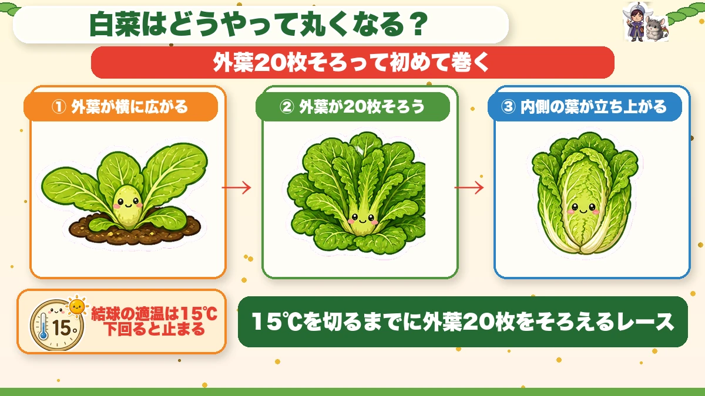
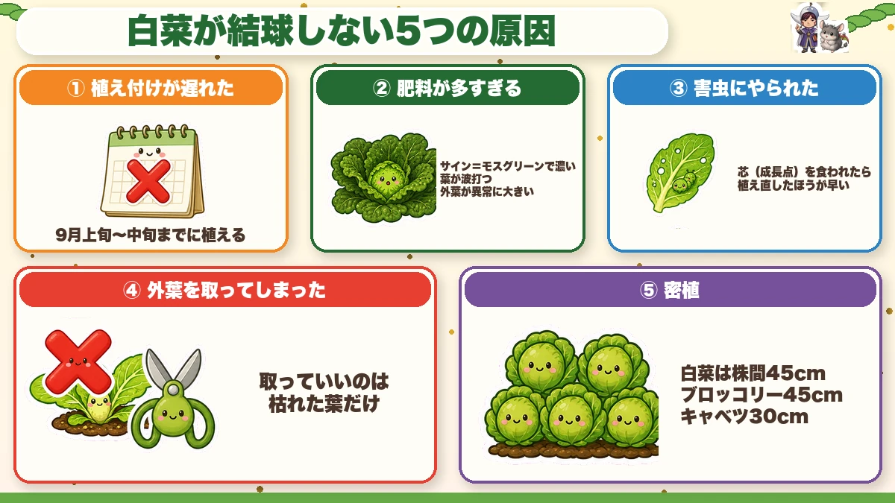
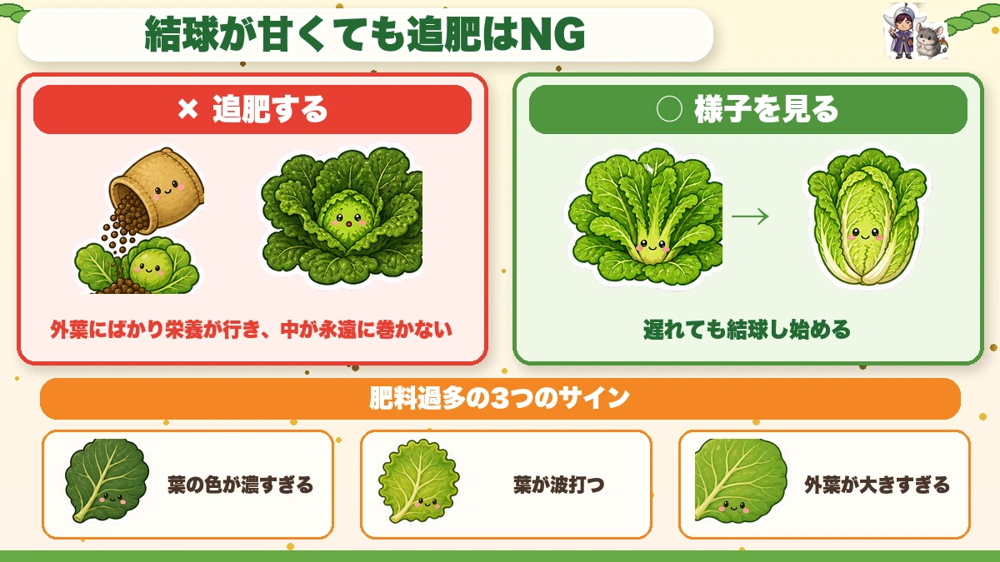
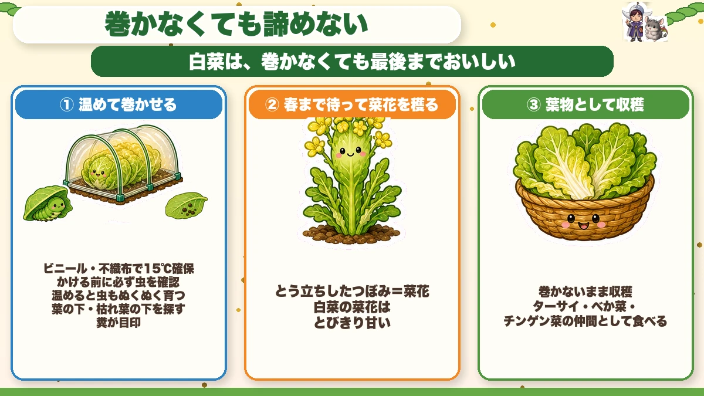
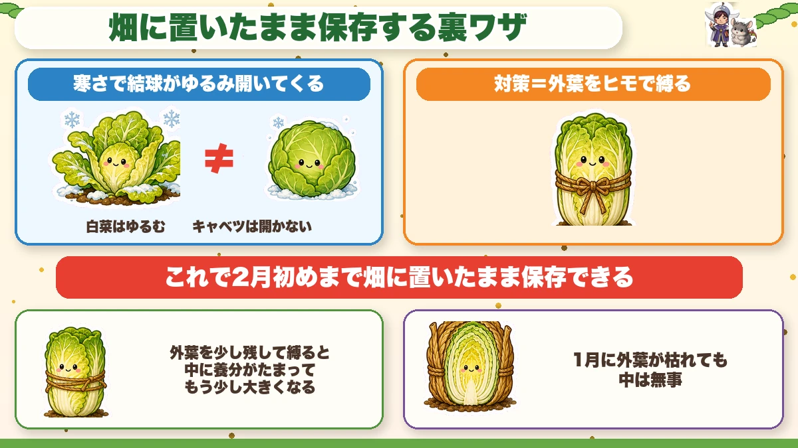

【保存版】白菜が巻かない本当の理由🥬 外葉20枚と、やってはいけない親切

🗨️「白菜、いつまで経っても丸くならない…」
🗨️「葉っぱは立派なのに、真ん中が開いたまま」
🗨️「虫に食べられて、気づいたら穴だらけ」
どうも、8150（えいこう）です🌱 家庭菜園歴8年、理科の教員免許を持っていて、有機・無農薬で野菜を育てています。
今日は白菜です。秋冬野菜の大物であり、いちばん「失敗した」と聞く野菜でもあります。
先に、この記事でいちばん言いたいことを言っておきますね。
白菜が巻かないのは、寒くなったからじゃありません。
原因は5つあって、そのほとんどが植えた時点でもう決まっています。逆に言えば、最初の1か月を外さなければ、白菜はちゃんと巻いてくれます。
そしてもうひとつ。よかれと思ってやる「ある親切」が、結球（葉が丸く巻くこと）を止めてしまいます。これが本当に多いので、今日はそこを重点的にお話しします。
※以下の時期は中間地（関東〜関西の平野部）が目安。寒い地域は少し遅らせ、暖かい地域は早めに。種の袋にまく時期が書いてあるので、そこもチェック✨️
📖 この記事の目次
栽培データ
- 科：アブラナ科（仲間＝大根・キャベツ・ブロッコリー・かぶ・小松菜。同じ場所は2年あける）
- タネまき：8月20〜26日ごろ（セルトレイで育苗）
- 植え付け：9月上旬〜中旬（苗を買う場合もこの時期）
- 株間：45cm
まず「巻くしくみ」を知ると、全部つながります

白菜は、最初から丸い形で育つわけではありません。
はじめは外側の葉（外葉）が横に広がっていきます。そして外葉がある枚数までそろうと、そこで初めて内側の葉が立ち上がって、内へ内へと巻き始めます。
その枚数が、だいたい20枚です。
ここがこの記事のいちばん大事なところなので、もう一度言いますね。
外葉が20枚そろうまで、白菜は絶対に巻きません。
そしてもうひとつ数字があります。結球が進む適温は15℃くらい。これを下回ると、巻く動きそのものが止まります。
この2つを並べると、白菜づくりの正体が見えてきます。
気温が15℃を切るまでに、外葉を20枚そろえるレース
これだけなんです。「9月中旬までに植えてください」と言われる理由も、ここから逆算されています。植えるのが1週間遅れれば、外葉を作る時間が1週間まるごと減る。20枚に届かないまま15℃を切ったら、そこで試合終了です。
結球しない原因は、この5つです

順番に見ていきましょう。どれも、気づけば防げるものばかりです。
①植え付けが遅れた
いちばん多い原因です。前の項目のとおり、外葉20枚を作る時間が足りなくなります。
苗を植えるなら9月上旬〜中旬まで。タネからなら8月20〜26日ごろにまいて、育苗してから植えます。くわしいまき時は9月にまく・植える野菜にまとめました。
もし今、時期を過ぎてしまっている方。大丈夫です。この記事の最後に「巻かなかったときの回収方法」を3つ書いてあるので、そちらへ進んでください。捨てなくていいですよ☺️
②肥料が多すぎる（少なすぎる）
これ、意外に思われるかもしれません。足りないよりも、多すぎるほうがよく起きます。
肥料が多いと、外葉ばかりが元気になって、内側が巻く方へ力が向かいません。ひどいときは、まったく結球しないまま外葉だけ立派になります。
しかも肥料が多い株は病気にもなりやすく、虫にも狙われやすくなります。人間と同じで、栄養過多で体調を崩す感じですね。
見分け方があります。
- 葉の色が、モスグリーンのように濃すぎる
- 葉が波打っている（平らじゃなく、うねっている）
- 外葉が異常に大きい
このどれかが出ていたら、肥料が効きすぎています。
③害虫にやられた
葉がボロボロになると、光合成ができません。すると株が「まだ巻く体力がない」と判断して、結球のスイッチが入らなくなります。
なので防虫ネットは、あったほうがいいではなく必須だと思ってください。植えた直後からかけます。
とくに気をつけてほしいのが、株の真ん中です。
シンクイムシという虫が、これから新しい葉が出てくる成長点に潜り込みます。ここをやられると、そもそも新しい葉が出てこないので、もう巻きようがありません。
正直に言うと、芯を食われた株は、植え直したほうが早いです。もったいないですが、待っても結球しません。私も去年、芯をやられた4株を「もしかしたら」と粘って残しました。結果、11月末に開いたままの4株を見ることになりました😇
④★外葉を取ってしまった
ここが今日いちばん伝えたいところです。
白菜を育てていると、外側の葉がマルチの上にペタッと寝そべって、どんどん横に広がってきます。これが結構じゃまに見えるんですよね。「風通しも悪そうだし、取っておこうかな」と。
その親切が、結球を止めます。
さっきの話を思い出してください。白菜は外葉が20枚そろって初めて巻き始めます。つまり外葉は、じゃまな葉ではなく結球のためのカウンターなんです。
しかも外葉は光合成の主力です。取るということは、工場を減らしながら「早く製品を作れ」と言っているのと同じ。
なので、横に広がった葉はそのままにしておいてください。見た目が悪くても、それでいいんです。
ただし例外があります。枯れて黄色くなった葉は、取ってしまって大丈夫です。もう光合成をしていないので、残すと病気のもとになります。
⑤密植した
株間が狭いと、外葉が広がるスペースがありません。20枚そろう前に、隣とぶつかって止まってしまいます。
白菜は株間45cm。けっこう広いと感じると思いますが、これは外葉が広がる面積を確保するための数字です。
ちなみにブロッコリーも45cm、キャベツは30cmで大丈夫です。同じアブラナ科でも、外葉の広がり方で必要な間隔が変わります。
結球が甘いとき、追肥してはいけません

11月ごろ、こんな気持ちになります。
「うちの白菜、なんか巻きが甘いな…肥料が足りないのかな」
ここで追肥するのが、いちばんやってはいけないことです。
理由はさっきの②のとおり。結球が甘い原因が肥料過多だった場合、追肥は火に油です。外葉にますます栄養が行って、内側は永遠に巻きません。
じゃあどうするか。答えは「様子を見る」です。
肥料を足さずに待っていると、時期は少し遅れますが、そのまま結球し始めることがよくあります。株が自分のペースで20枚をそろえているところなんですね。
判断に迷ったら、さっきの3つのサインを見てください。葉の色が濃い・波打っている・外葉が大きい。これが出ていたら肥料は足りています。むしろ多いです。
防虫ネットは、いつ外す？
よく聞かれるので、ここも書いておきます。
答えは、霜が降りる頃まで残す。目安は11月10日ごろです。
そしてもうひとつ、有機で長くやっている方から教わって、私も真似しているやり方があります。
完全に外さず、「ゆるめる」んです。
- 裾を押さえていた土は外す
- トンネル自体はゆるく残す
こうすると、虫はある程度防げたまま、風通しがよくなります。秋の後半は虫より病気のほうが怖いので、このバランスがちょうどいいんですよね。
そして結球してきて、毎日のように霜が降りるようになったら、そこで外してOKです。
巻かなかったときの、回収方法3つ

さて、ここからは「もう間に合わなかった」方へ。
安心してください。白菜は、巻かなくても最後までおいしく食べられます。私は毎年、何株かはこっちのコースになります。
①温めて、巻かせる
結球の適温は15℃でしたね。だったら、温めてあげればいいわけです。
ビニールや不織布で防寒トンネルをかけて、中の温度を確保します。これで巻き始めることがあります。
ひとつだけ、絶対に守ってほしいことがあります。
トンネルをかける前に、必ず虫がいないか確認してください。
温かい環境は、虫にとっても天国です。虫を閉じ込めたままトンネルをかけると、ぬくぬく育って一気に食べられます。
探す場所は、葉の下と、株元の枯れ葉の下。そして糞が目印です。糞を見つけたら、その近くに必ずいます。
②春まで待って「菜花」を穫る（私のおすすめ）
これ、知ったとき「その手があったか」と思いました。
巻かないまま春を迎えると、白菜はとう立ち（花を咲かせようとして茎が伸びること）して、つぼみをつけます。これが菜花です。
そして白菜の菜花、めちゃくちゃ甘いんですよ。アブラナ科はどれも菜花が穫れますが、私が食べ比べた中では白菜が一番だと思っています。
なので「この株はもう巻かないな」と思ったら、早めに菜花コースに切り替えてしまう。そう決めた瞬間から、その株は失敗作ではなくなります。
③葉物野菜として、そのまま収穫
春まで待てない方へ。巻かないまま収穫して、普通の葉物として食べてしまう手もあります。
白い茎の甘さは味わえませんが、緑の葉として十分おいしいです。
そもそもターサイやべか菜、チンゲン菜は白菜の親戚です。あれと同じように使えばいいだけ。炒め物にすると、ぜんぜんアリです。
うまく巻いた人へ：畑で「保存」する裏ワザ

順調に巻いた方にも、とっておきの話を。
白菜は、急いで収穫しないでください。1月〜2月中旬まで畑に置いておくと、驚くほど甘くなります。
ただし、白菜にはひとつクセがあります。
寒さに当たると、巻いた葉がだんだん開いてくるんです。
キャベツは一度巻いたら開きません。でも白菜の結球はゆるいので、開いてしまう。開くと中に霜が入って傷みます。
そこでどうするか。
外葉をヒモで縛って、開かないようにします。
物理的に閉じてしまうわけですね。これで2月の初めごろまで、畑に置いたまま保存できます。必要なぶんだけ順番に収穫していけばOKです。
コツをひとつ。全部きっちり縛ってもいいのですが、外葉を少し残して縛ると、中に養分がたまってもう少し大きくなります。私はこの「ちょっとゆるめ」派です。
1月になると外側の葉は枯れてきますが、心配いりません。縛ってあれば中は無事です。むしろ外葉が布団になってくれます。
学ぶ：なぜ寒いと甘くなるのか🔬
理科の時間です。
白菜もほうれん草も大根も、冬になると甘くなります。あれ、気のせいではなくて、ちゃんと理由があります。
野菜にとって、凍ることは死を意味します。細胞の中の水が凍ると、氷の結晶が細胞を内側から壊してしまうからです。
そこで野菜は、寒さを感じると、こんなことをします。
光合成で作ったデンプンを、糖に変えて細胞の中にためる
これがポイントです。真水は0℃で凍りますが、砂糖水は0℃では凍りません。塩水が凍りにくいのと同じで、何かが溶けている水は凍る温度が下がるんですね。
つまり野菜は、自分の体を「凍りにくい砂糖水」に作り変えて冬をしのいでいるわけです。
そしてその砂糖水を、食べたときに「甘い」と感じているわけです。冬野菜が甘いのは、野菜が必死に生き延びようとした結果なんですよね。ちょっと申し訳ない気もします。
お子さんと一緒なら、こんな実験ができます。同じ日に収穫した白菜を1株だけ残しておいて、寒い日が続いたあとにもう1株収穫する。芯のところを生でかじり比べてみてください。
同じ株の、同じ場所です。それでもはっきり味が違います。「寒さで甘くなる」を舌で確かめられるので、これは面白いですよ☺️
まとめ
ここまで読んでくださって、ありがとうございます！
白菜は難しい野菜だと思われがちですが、押さえるところは意外と少ないです。
- 白菜は外葉が20枚そろって初めて巻く。適温は15℃。だから9月中旬までに植える
- 結球しない5つの原因は、遅れ・肥料・虫・外葉を取る・密植。ほとんど植えた時点で決まる
- ★横に広がった外葉は絶対に取らない。取っていいのは枯れた葉だけ
- 結球が甘いときに追肥しない。葉が濃い・波打つ・外葉が大きいは肥料過多のサイン
- 巻かなくても、温める・菜花を穫る・葉物として食べる、の3つで回収できる
- うまく巻いたら外葉をヒモで縛って、1〜2月まで畑で保存。寒さに当たるほど甘くなる
もし今年うまくいかなくても、ぜんぜん大丈夫です。私も毎年、何株かは菜花コースに行きます。そしてその菜花が、これまた美味しいんですよ🥬
次回は、秋の葉物ベスト。小松菜や水菜を「抜かずに摘んで」、1株から3回穫る育て方をお話しします🥬
防虫ネット
白菜は「あったほうがいい」ではなく必須です。植えた直後からかけて、霜が降りる11月10日ごろまで残します。
![[商品価格に関しましては、リンクが作成された時点と現時点で情報が変更されている場合がございます。]](https://hbb.afl.rakuten.co.jp/hgb/56bc205d.0066fedc.56bc205e.af56d163/?me_id=1260467&item_id=10000299&pc=https%3A%2F%2Fthumbnail.image.rakuten.co.jp%2F%400_mall%2Fmarsol-morishita%2Fcabinet%2Fshouhinn%2Fbouchuu%2Fimgrc0090950099.jpg%3F_ex%3D240x240&s=240x240&t=picttext "[商品価格に関しましては、リンクが作成された時点と現時点で情報が変更されている場合がございます。]")

不織布
結球が間に合わなそうなときの防寒トンネル用に。かける前に必ず虫がいないか確認してください。
![[商品価格に関しましては、リンクが作成された時点と現時点で情報が変更されている場合がございます。]](https://hbb.afl.rakuten.co.jp/hgb/56bc237a.e97551b1.56bc237b.2513ed10/?me_id=1310260&item_id=10000879&pc=https%3A%2F%2Fthumbnail.image.rakuten.co.jp%2F%400_mall%2Fdiokasei%2Fcabinet%2F007fusyokufu%2F12g%2Fimgrc0092049705.jpg%3F_ex%3D240x240&s=240x240&t=picttext "[商品価格に関しましては、リンクが作成された時点と現時点で情報が変更されている場合がございます。]")
麻ひも
外葉を縛って、畑に置いたまま2月まで保存するときに使います。土に還るので麻ひもが便利です。
![[商品価格に関しましては、リンクが作成された時点と現時点で情報が変更されている場合がございます。]](https://hbb.afl.rakuten.co.jp/hgb/56bc2b48.a5f55627.56bc2b49.c4ff0d7c/?me_id=1372205&item_id=10005292&pc=https%3A%2F%2Fthumbnail.image.rakuten.co.jp%2F%400_mall%2Faudiofuntech%2Fcabinet%2Fproducts%2Fetc%2Fetc06%2F7052-1.jpg%3F_ex%3D240x240&s=240x240&t=picttext "[商品価格に関しましては、リンクが作成された時点と現時点で情報が変更されている場合がございます。]")
あわせて読みたい